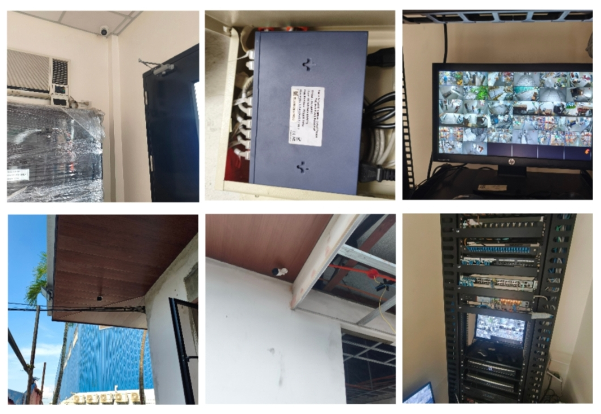

02

CCTV Surveillance System Installation
Took part in CCTV installation projects covering IP cameras, NVR configuration, structured cabling, camera mounting, PVC conduit installation, cable termination, and system testing.